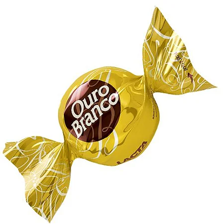
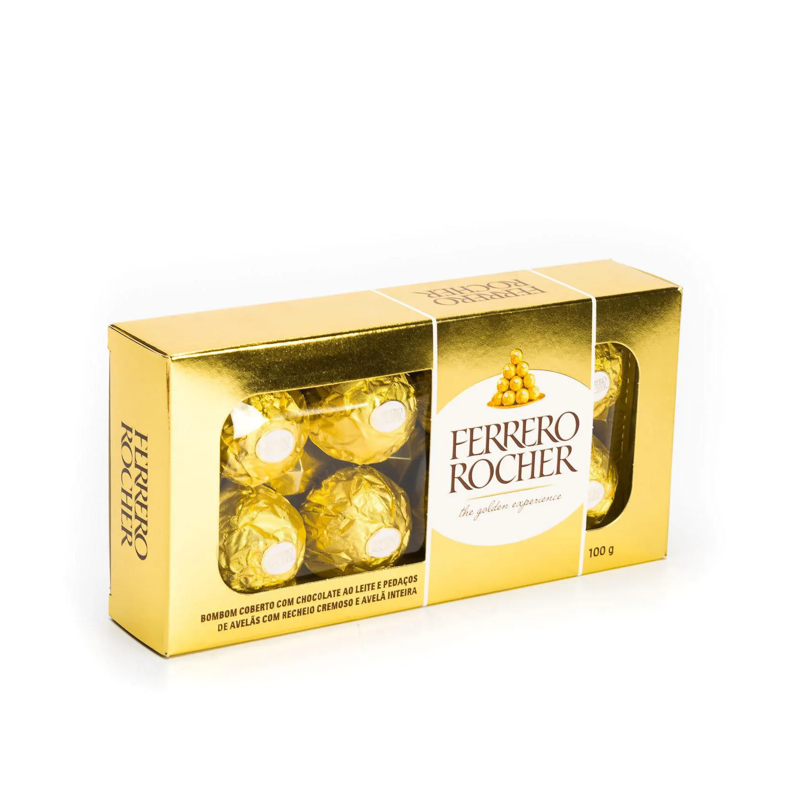
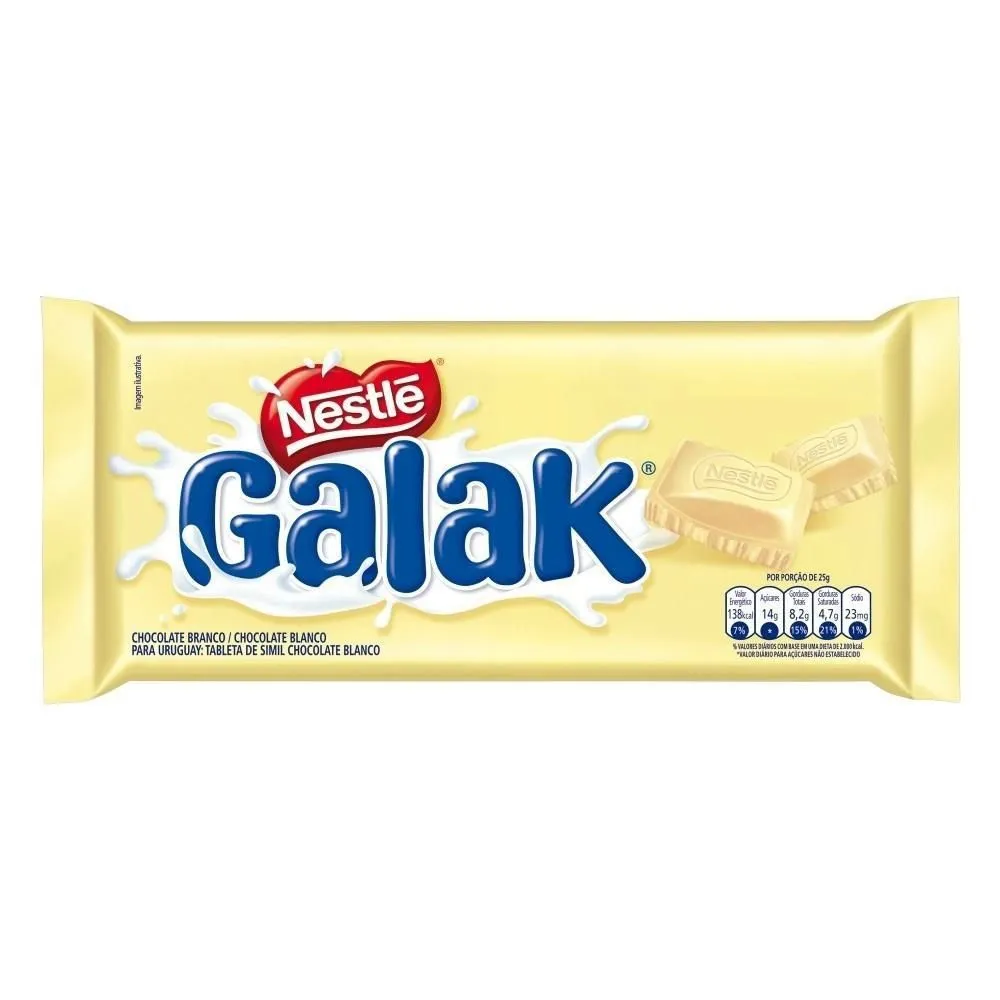
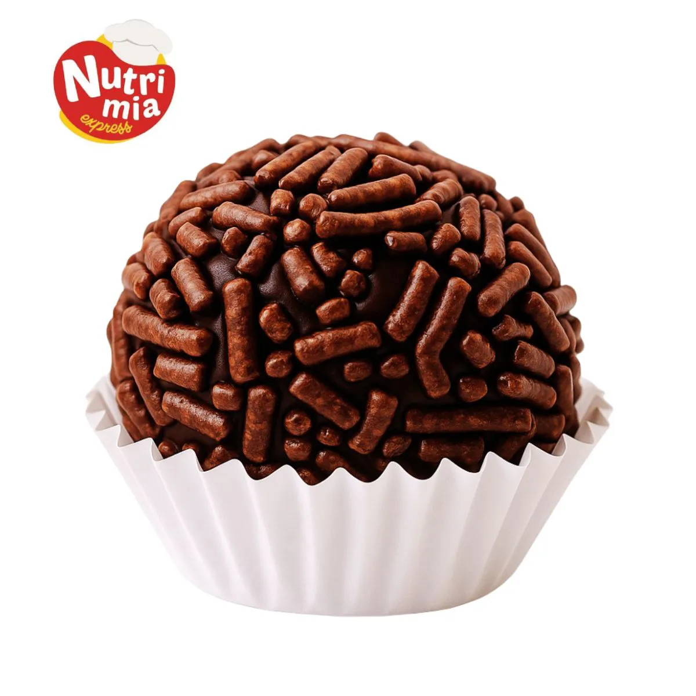
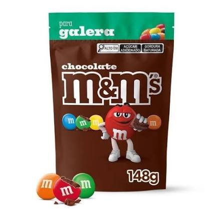
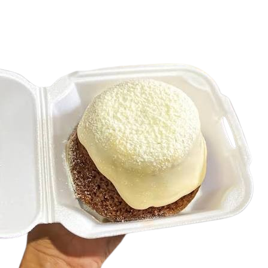
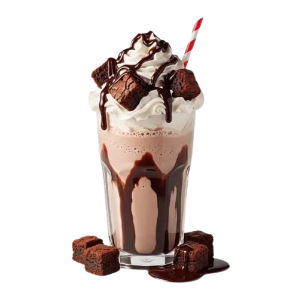

O Sonho de Valsa tem uma casca de wafer crocante,
um recheio cremoso feito com pasta de amendoim e castanha-de-caju

Ouro Branco
O Ouro Branco tem uma casca de wafer crocante e cobertura de chocolate branco,
com um recheio cremoso de chocolate com flocos de arroz.

Ferrero Rocher
O Ferrero Rocher tem uma casca de wafer crocante coberta com chocolate ao leite e pedaços de avelã,
recheio cremoso e uma avelã inteira no coração do bombom.

Galak
A barra de Galak é feita inteiramente de chocolate branco macio,
com um sabor marcante e adocicado que destaca o gosto pronunciado do leite.

Brigadeiro
O brigadeiro é feito de leite condensado cozido com manteiga e chocolate em pó,
enrolado em formato de bolinha e coberto com chocolate granulado

M&M
Os M&M's são pastilhas de chocolate ao leite com formato arredondado,
cobertas por uma casquinha de açúcar colorida e crocante.

Bolo vulcao de chocolate com leite ninho
O bolo vulcão de chocolate com leite ninho traz uma massa fofinha de chocolate com um buraco central preenchido por um brigadeiro
cremoso de Leite Ninho, que escorre como lava ao cortar a primeira fatia.
Extra

Milkshake de brownie de chocolate
O milkshake de brownie combina sorvete cremoso de baunilha ou chocolate batido com leite,
misturado a pedaços densos e fudgy de brownie e calda de chocolate.